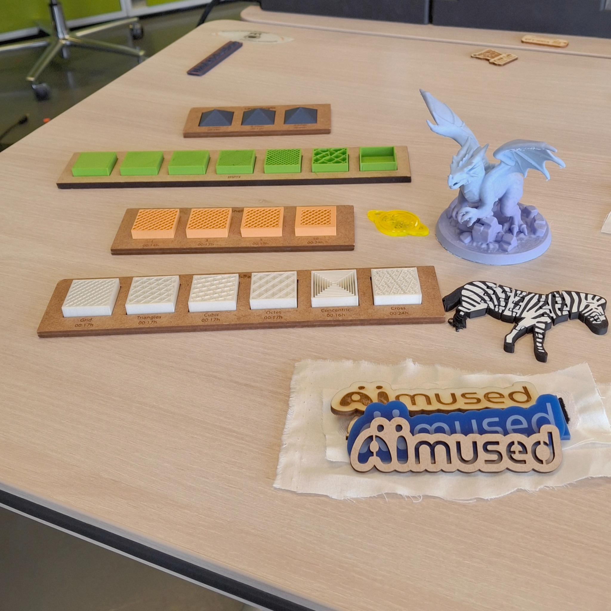
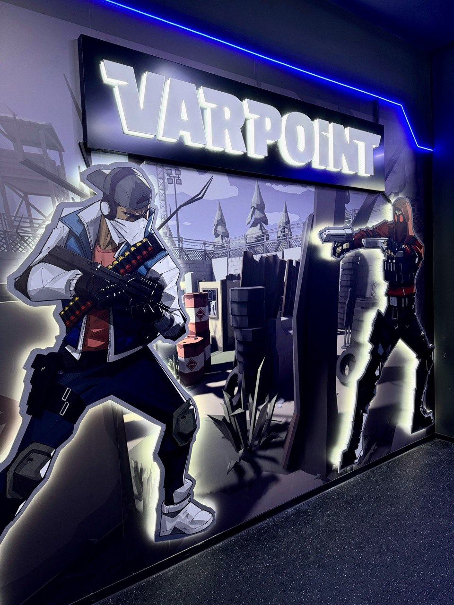

Meine Projekte / Meine Arbeit in Deutschland
Meine Arbeit in Deutschland
Nach meiner langjährigen Berufserfahrung in Aserbaidschan begann mit meinem Umzug nach Deutschland ein neues Kapitel meiner beruflichen Laufbahn.
Parallel zu meinem Masterstudium im Bereich European Management an der TH Wildau sammle ich weiterhin praktische Erfahrungen in unterschiedlichen beruflichen Umfeldern. Dabei bringe ich meine bisherigen Kenntnisse ein und entwickle gleichzeitig neue Kompetenzen.

AIMused | TH Wildau
Über das Projekt
AIMused (Accessibility Integration and Artificial Intelligence for Museums) ist ein internationales europäisches Projekt, an dem Partner aus fünf Ländern des südlichen Ostseeraums beteiligt sind, darunter die TH Wildau in Deutschland. Ziel des Projekts ist es, die Barrierefreiheit von Museen und anderen touristischen Einrichtungen durch künstliche Intelligenz, inklusives Design sowie die Entwicklung digitaler und physischer Hilfsmittel für Besucherinnen und Besucher mit unterschiedlichen Bedürfnissen zu verbessern.
Mein Beitrag
Im Rahmen meiner Tätigkeit als studentische Mitarbeiterin an der TH Wildau war ich am AIMused-Projekt beteiligt. Ich führte eine qualitative Literatur- und Dokumentenrecherche zur Barrierefreiheit von Museen durch, analysierte wissenschaftliche Quellen, klassifizierte die Bedürfnisse von Besucherinnen und Besuchern sowie verschiedene Arten physischer und taktiler Objekte und identifizierte relevante Gestaltungsmerkmale und deren Auswirkungen auf die Barrierefreiheit.
Aktuelle Aufgaben
Analyse der bestehenden Wissenssammlung des AIMused-Projekts sowie Erstellung von Fachartikeln für die Wissensdatenbank (Knowledge Base) auf der Projektwebsite.

HOVR Entertainment GmbH | VARPOINT VR Berlin Tempelhof
Über das Unternehmen
Die HOVR Entertainment GmbH betreibt VARPOINT VR Berlin Tempelhof, ein Virtual-Reality-Erlebniszentrum, das immersive Spielerlebnisse, Gruppenaktivitäten, Geburtstagsfeiern und Firmenevents anbietet.
Mein Beitrag
Aufbau der Social-Media-Präsenz, Einrichtung von Google-Konten und des Google Unternehmensprofils sowie Umsetzung digitaler Werbekampagnen zur Stärkung der Online-Präsenz des Unternehmens.
Aktuelle Aufgaben
Optimierung der Website, Erstellung digitaler Inhalte, Pflege des Google Unternehmensprofils, internes Reporting sowie Entwicklung und Dokumentation betrieblicher Abläufe.